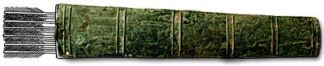

The Challenge -
Quiver

This is part of a quiver (the other side was probably made of leather but has decayed). It was found to the east of Mesopotamia and is decorated with figures and scenes like in Assyrian art and so archaeologists were able date it to around the ninth century B.C. Assyrian quivers were made of many different materials but this one is of bronze. It is unusual for metal objects to survive in excavations because they decay. However, this example had survived almost intact.
|
|